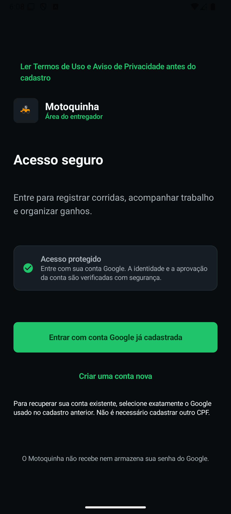

C.B.S. Desenvolvimento / Estúdio digital
Tecnologia que se transforma em experiência.
Aplicativos, automações, vídeo, imagens, modelos virtuais e experiências web. Desenvolvemos produtos digitais e criamos a apresentação que eles merecem.

Competências C.B.S.
Desenvolvimento, conteúdo e automação. No mesmo estúdio.
Cada projeto começa com um objetivo. O formato e a tecnologia vêm depois.
01 / DESENVOLVIMENTO
Aplicativos e sistemas
Android, plataformas web, gestão e interfaces personalizadas.
Explorar soluções ↗ 02 / OPERAÇÕESAutomações
Fluxos repetitivos, integrações e rotinas simples de trabalho.
Ver possibilidades ↗ 03 / IA CRIATIVAModelos virtuais
Personagens fictícios e peças publicitárias com IA.
Conhecer a galeria ↗ 04 / CONTEÚDOVídeo & motion
Edição, composições, narrativas e identidade em movimento.
Assistir às produções ↗ 05 / WEBSites e experiências
Portfólios, sistemas comerciais e páginas responsivas.
Explorar web ↗ 06 / COMÉRCIOCatálogos e vitrines
Produtos organizados, apresentação e canais de pedidos.
Ver catálogo ↗Portfólio demonstrativo
Projetos que mostram a prática.
Explore projetos autorais, peças audiovisuais e experiências digitais criadas pelo estúdio.


Site responsivo
Estudo de estrutura comercial, navegação e leitura em dispositivos móveis.
Conhecer projeto ↗Mídia e criatividade
Mais do que páginas.
Além do desenvolvimento, reunimos peças de anúncio, imagens para catálogos, vídeo curto e estudos de apresentação. A galeria de IA já apresenta três estudos de personagens sintéticos identificados como conteúdo fictício.
Conhecer a galeria ↗
Conteúdo sintético / Portfólio demonstrativo
Personagens que só existem no digital.
Conheça três amostras de modelos virtuais fictícios criados com IA. Imagem publicitária, campanhas, composição visual e novos formatos de apresentação.
C.B.S. em vídeo
Do aplicativo à campanha: Motoquinha em cena.
Uma apresentação do produto com animação 3D, trilha original e uma visão dos seus módulos. As telas reais e os conceitos visuais estão identificados.
Apresentação completa ↗Abrir vídeo MP4 separadamente ↗
Vídeo de apresentação do estúdio, com direção de arte 3D e trilha original.